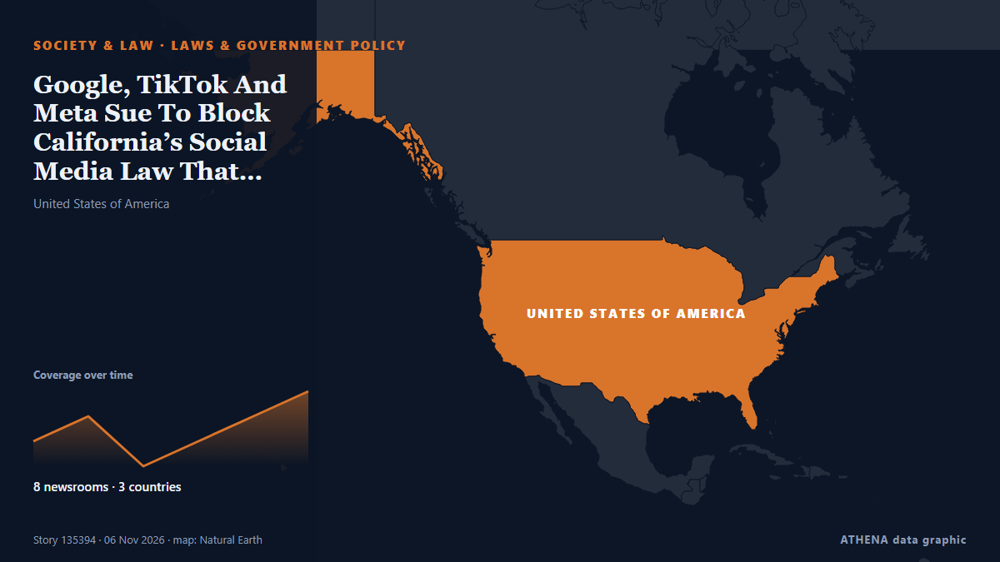

Νόμοι & κυβερνητική πολιτική
ΧορηγούμενοΠαρουσιάζεται από  Cybernetics and Artificial Intelligence Lab Welcome to the Cybernetics and Artificial Intelligence Laboratory, established at the Department of Business Administration of the National and Kapodistrian University of Athens. The lab is headed by Professor Dimitrios Thomakos. The lab aims to do research that can be published in top venues. Our research uses tools and methods of Artificial Intelligence, and lies in the following areas: - Forecasting - Decision making - Cyber security - Finance We are always looking forward to collaborating with exceptional students!
Cybernetics and Artificial Intelligence Lab Welcome to the Cybernetics and Artificial Intelligence Laboratory, established at the Department of Business Administration of the National and Kapodistrian University of Athens. The lab is headed by Professor Dimitrios Thomakos. The lab aims to do research that can be published in top venues. Our research uses tools and methods of Artificial Intelligence, and lies in the following areas: - Forecasting - Decision making - Cyber security - Finance We are always looking forward to collaborating with exceptional students!
| 24 Οκτ | 0 |
|---|---|
| 25 Οκτ | 0 |
| 26 Οκτ | 0 |
| 27 Οκτ | 0 |
| 28 Οκτ | 0 |
| 29 Οκτ | 0 |
| 30 Οκτ | 0 |
| 31 Οκτ | 0 |
| 1 Νοε | 3 |
| 2 Νοε | 2 |
| 3 Νοε | 7 |
| 4 Νοε | 5 |
| 5 Νοε | 4 |
| 6 Νοε | 0 |
Οι τίτλοι των ειδήσεων παρουσιάζονται στα αγγλικά, όπως δημοσιεύτηκαν.

Google, TikTok And Meta Sue To Block California’s Social Media Law That Restricts Addictive Features For Children
Three tech giants — Google, Meta and TikTok — sued the state of California over a recently passed law designed to restrict social media platforms from offering “addictive” features to children under… από Deadline
FG urges youth confab delegates to propose actionable recommendations
Youth Confab 2026: 360 delegates converge on Abuja to shape Nigeria’s future By Franca Ofili The Federal Government has convened 360 delegates in Abuja for the physical phase of the… από News Agency of Nigeria
Andy Burnham issues major update on plans to slash £45 from energy bills for UK households
The new Bill was introduced to Parliament today (Wednesday, November 4) από Manchester Evening News
Mother of slain Ghanaian teenager Javits Frimpong travels to US; seeks justice for son
By: Magdalene Andoh The mother of 15-year-old Ghanaian boy, Javits Frimpong, Madam Doris Adu Gyamfi, has departed for the United States (US) to join family members mourning the death of her son, who… από GBC Ghana Online
New £176 a month warning for every home despite people cutting bills
Household bills and outgoings now account for 67% of reported monthly income. από WalesOnline
Islamabad’s One Constitution Avenue project: Ahsan says JIT has found serious irregularities, fraud
ISLAMABAD: Minister for Planning and Development Ahsan Iqbal said on Wednesday that a joint investigation team (JIT) had found serious irregularities and fraud in Islamabad’s One Constitution Avenue… από Business Recorder
Democrat permitting bill authors ‘not going to wait’ for new US Congress
The Democratic architects of proposed bipartisan energy permitting legislation said on Wednesday they would not delay the bill in hopes of securing a better deal next year when Democrats take… από Arab News
UK rules out law change for permanent return of Parthenon Sculptures
The UK Government says it has no plans to change the law to allow the permanent return of the Parthenon Sculptures, despite renewed calls in Parliament for their reunification in Athens. από Greek City Times
Utah teen who had been missing for 17 months is found safe and a 39-year-old man was detained
FBI Director Kash Patel issued a warning to so-called ‘gore groups’ in his statement confirming that the teenager had been found. από The Independent
State police: 28 assemblies approve, Tinubu’s assent next
The Bill was transmitted by the Clerk to the National Assembly to the 36 State Houses of Assembly on 16 September 2026 for their consideration and approval, with a request that their decisions be… από Channels TV
Congress Passes De la Espriella Administration’s Submission Law
Colombia’s Congress approved the so-called Submission Law last night, the centerpiece of President Abelardo de la Espriella’s efforts to change the country’s security strategy and combat criminal… από Colombia One
King's former horse Point Of Law wins Melbourne Cup
Point Of Law, previously owned by the King and Queen, ran out a decisive winner of a Ciaron Maher dominated Lexus Melbourne Cup in Flemington. από Sky Sports
Tamil Nadu can lead in expenditure reform
If the committee tasked with defining how expenditure is measured and evaluated succeeds, Tamil Nadu could offer other States a practical approach to expenditure reform. από The Hindu
10yo boy shoots teen over loud music, mother faces murder charges
Authorities in New Mexico have filed murder and other charges against the mother of a 10-year-old boy who fatally shot a teenage neighbor in a dispute over loud music. από VnExpress International